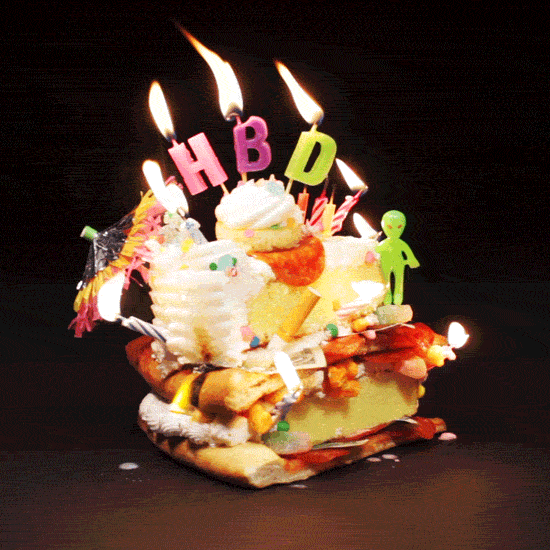

Hjertelig tillykke med de 64 år, mor!
(tryk på mellemrumstasten for at fortsætte hver gang du har læst færdig)
Det kan jo nogle gange være lidt svært at ramme plet med en gave når den skal gives fra lang afstand...

...men så er det jo godt at jeg snart kommer til Danmark :)
Så jeg vil gerne give dig en oplevelse du kan dele med din søn, engang imellem d. 11 og 17. februar i stedet.
Spørgsmålet er så bare hvad vi skal lave. Så jeg har fundet på lidt valgmuligheder, du kan vælge imellem.
Valgmulighed 1
Virtual reality experience + dit eget headset
Et besøg hos Khora, der producere og sælger virtual reality oplevelser, hvor du kan svømme med hvaler, udforske det ydre rum eller besøge Mars - alt sammen med en følelse af, at du er der selv.
Oplevelsen indeholder:
- 30 minutters oplevelse pr. person
- Prøv de forskellige film og spil
- Introduktion omkring Virtual Reality universet
- Din egen Bobo VR brille med indbygget controller til at bruge sammen med din iPhone derhjemme
Valgmulighed 2
Flødebollekursus
Lær at lave de lækreste flødeboller på et kort kursus hos Social Foodies, enten i Hellerup, Frederiksberg eller Lyngby. En hel særlig oplevelse, hvor vi både kan hygge og lære, samtidig med at vi får flødeboller med hjem.
Læs mere om det her.
Valgmulighed 3
Mystery Hunt på Kronborg eller Christiansborg (kræver dog min 4 pers)
En intelligent og udfordrende skattejagt på et unikt historisk sted: enten Kronborg, Kastellet, Christiansborg Slot eller Kongens have. Dette kræver dog at vi finder to personer mere der kan være med, men det lyder rigtig sjovt.
Du kan læs mere om det her.
Valgmulighed 4
Paragliding - Pilot for én dag
Dette arrangement er den bedste måde at få en fornemmelse af hvordan det er at lære at paraglide. En oplevelsesrig dag hvor vi under trygge forhold og kyndig vejledning skubber vores egne grænser lidt af gangen, og ender med at blive vægtløs for første gang.
Læs mere om det her.
Så, nu er spørgsmålet bare hvilken af de 4 muligheder du foretrækker. Glæder mig til at høre hvad du vælger.
Med venlig hilsen Nikolai